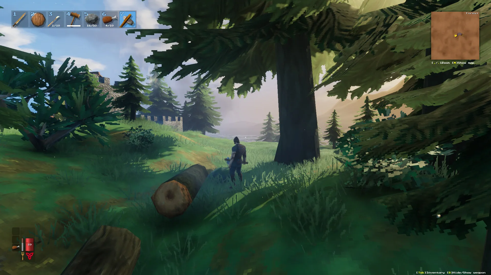

Valheim Farming Guide 2026 — All Crops & Agriculture
Master Valheim's farming system. Every crop from Carrots to Jotun Puffs, where to find seeds, how to use the Cultivator, optimal plant spacing, harvest yields, and biome-specific farming requirements. Build a self-sustaining food supply.

1. Cultivator — How to Get & Use
Crafted at a Forge (Level 1): 5 Core Wood + 5 Bronze. The Cultivator has two modes: Cultivate (right-click to till soil) and Plant (left-click to plant selected seeds/crops). Only specific biomes support cultivation: Meadows, Black Forest, Plains, and Mistlands.
2. All Crops by Biome
| Crop | Biome | Seed Source | Yield | Days to Grow |
|---|---|---|---|---|
| Carrots | Black Forest | Carrot Seeds (found in Black Forest — white flowers) | 3 seeds per carrot | ~3 days |
| Turnips | Swamp | Turnip Seeds (yellow flowers in Swamp) | 3 seeds per turnip | ~3 days |
| Onions | Mountain | Onion Seeds (chests in Mountain ruins) | 3 seeds per onion | ~3 days |
| Barley | Plains | Found in Fuling Villages | 2 barley per plant | ~2.5 days |
| Flax | Plains | Found in Fuling Villages | 2 flax per plant | ~2.5 days |
| Jotun Puffs | Mistlands | Found growing wild in Mistlands | 3 puffs per plant | ~3 days |
| Magecap | Mistlands | Found growing wild in Mistlands | 3 magecaps per plant | ~3 days |
| Lingonberries | Deep North | Lingonberry bushes | TBD | TBD |
3. Optimal Plant Spacing
Plants need ~1 meter of clear space in all directions. If two plants are too close, one will display "Needs more room to grow" and eventually wither. Grid pattern: leave roughly one small wooden beam (~1m) between each plant. The PlantEasily mod automates perfect spacing.
4. Farming Basics & Tips
- Seed → Plant → Seed cycle: First plant seeds to grow vegetables. Then replant vegetables as "seed crops" (each vegetable yields 2-3 seeds). This creates a self-sustaining loop.
- Biome restriction: Barley and Flax will ONLY grow in the Plains. Jotun Puffs and Magecap only in Mistlands. Don't waste seeds trying to grow them elsewhere.
- Protect your farm: Enemies and raids destroy crops. Build walls or stake fences around your farmland.
- Harvest at maturity: Crops turn golden/brown when ready. Harvesting too early gives no yield.
- Scale early: Start with 10-20 Carrot seeds and cycle them until you have 50+. Then scale to 100+. A large carrot/turnip/onion farm fuels all your early-mid game food.
Was this guide helpful?